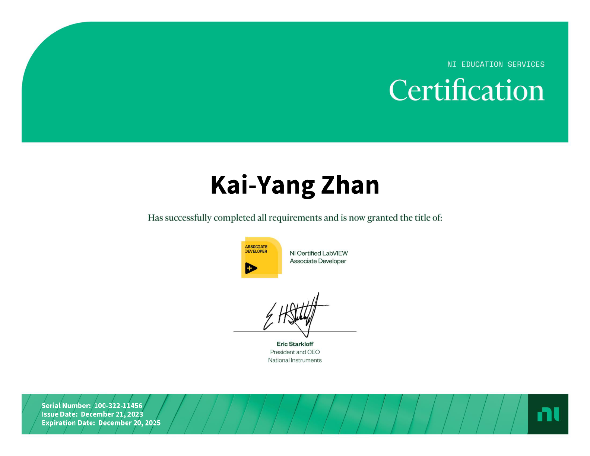

| 姓名：詹凱揚 | 出生日期：2002/03/23 | |
| 求職狀態：應屆畢業生 | 性別：男 | |
| 手機號碼：109550091 | 兵役：未服役 | |
| email：3060838@gmail.com | 畢業學校：陽明交通大學 | |
| 住址：新竹市大學路 | >科系：資訊工程學系 | >
| 2021/09 —— 2025/06 陽明交通大學 資訊工程學系 | |
| 課程經歷：作業系統、網路程式設計、資料庫系統、資料結構、物聯網程式設計等 |
| 暫無工作經歷，為應屆畢業生 |
| 2021-09 —— 2025-06 資訊工程學系C班 班級代表 | |
| 2022-09 —— 2023-06 飲料調製社 副社長 |
| 多益證書 | |
| LabVIEW CLAD證照 |
 |